LINHA DO TEMPO
1966
Fundação da Umbrella Corporation
Ozwell E. Spencer, Edward Ashford e James Marcus fundam a Umbrella Corporation, inicialmente uma empresa farmacêutica com propósitos sinistros ocultos.
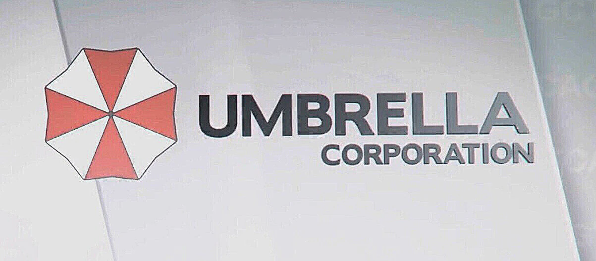
1967
Descoberta do Vírus Progenitor
Em uma expedição na África, os fundadores descobrem o Vírus Progenitor, que se tornaria a base para todas as bioarmas da Umbrella.
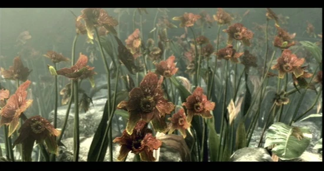
1978
Criação do Vírus-T
James Marcus desenvolve o Vírus-T através de experimentos com o Vírus Progenitor e sanguessugas.
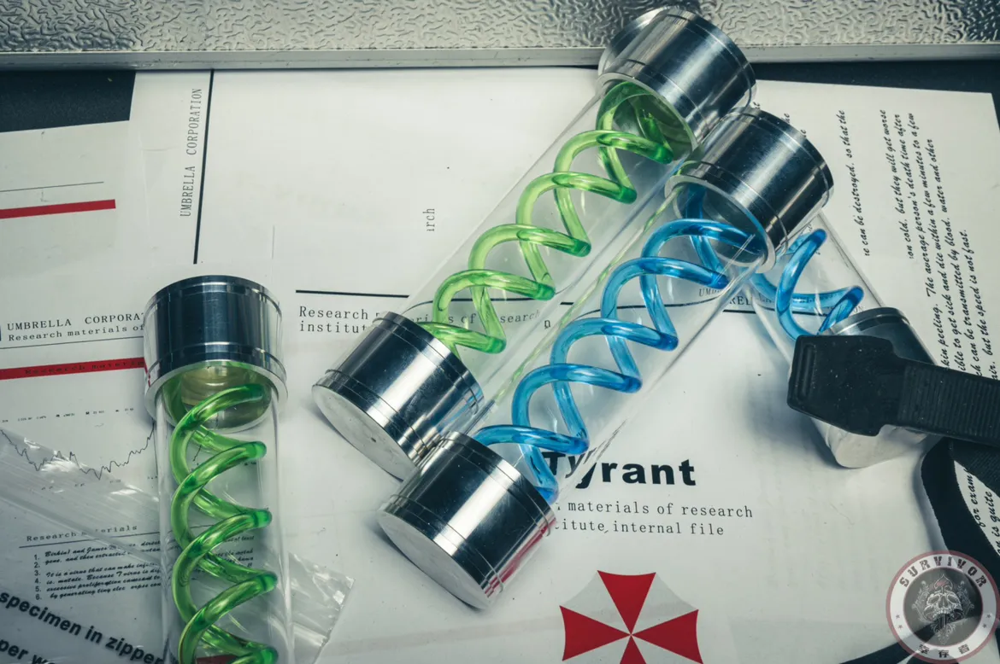
1988
Assassinato de James Marcus
Spencer ordena a eliminação de Marcus por meio de Wesker e Birkin. Marcus seria posteriormente revivido pelo próprio vírus que criou.
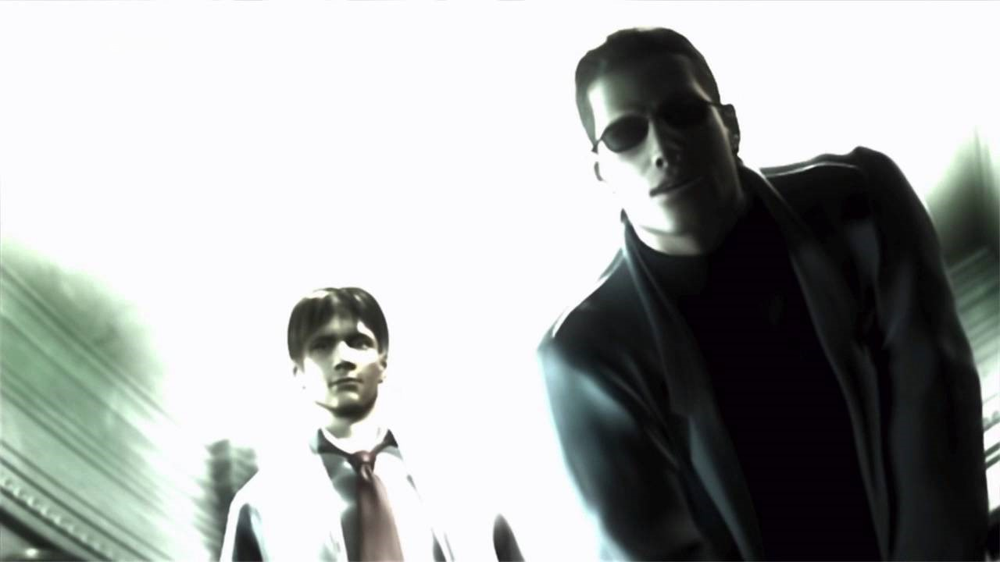
1996
Incidente da Mansão Spencer
A equipe S.T.A.R.S. investiga estranhos assassinatos e descobre o laboratório secreto da Umbrella. Wesker revela sua traição.
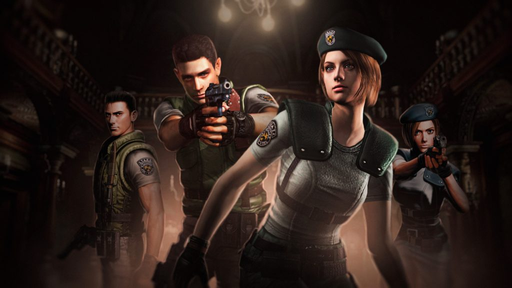
1998
Incidente de Raccoon City
Vazamento do Vírus-T causa surto massivo em Raccoon City. Leon Kennedy, Claire Redfield e outros sobreviventes lutam para escapar da cidade infestada.
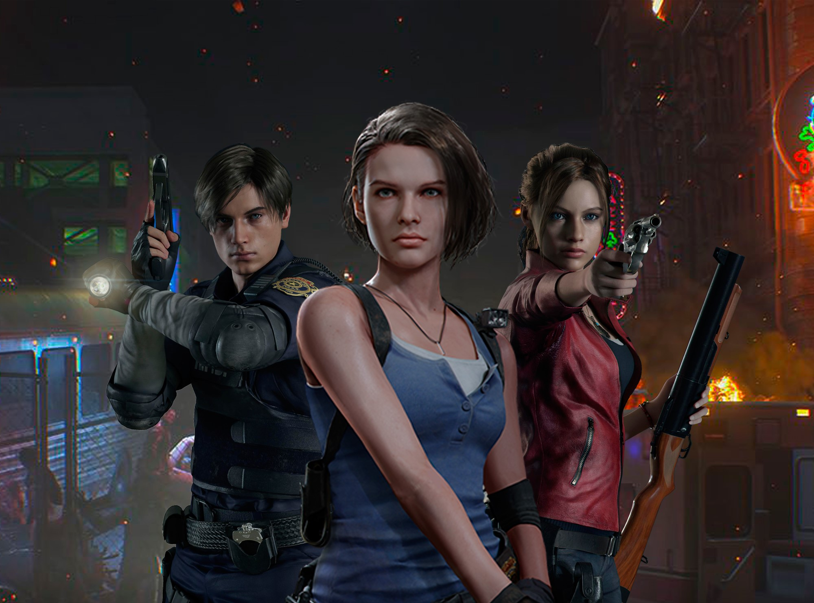
1998
Destruição de Raccoon City
O governo dos EUA lança um míssil nuclear para conter o surto, obliterando completamente Raccoon City.
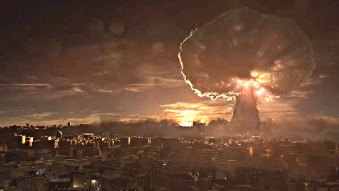
2003
Dissolução da Umbrella Corporation
Após anos de processos judiciais e pressão pública, a Umbrella Corporation é oficialmente dissolvida.
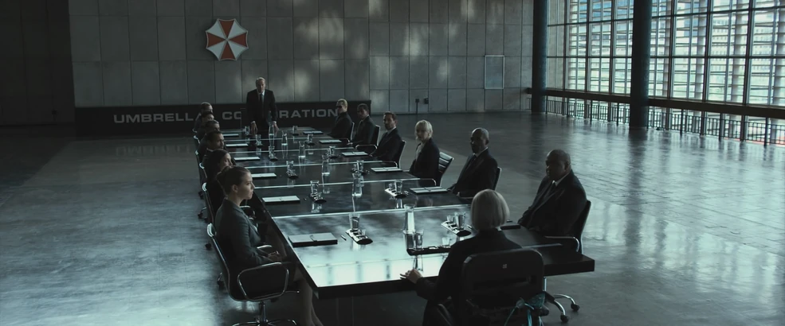
2004
Incidente na Vila Espanhola
Leon S. Kennedy é enviado para resgatar Ashley Graham. Descobre uma vila controlada pelo parasita Las Plagas e enfrenta a seita Los Illuminados.
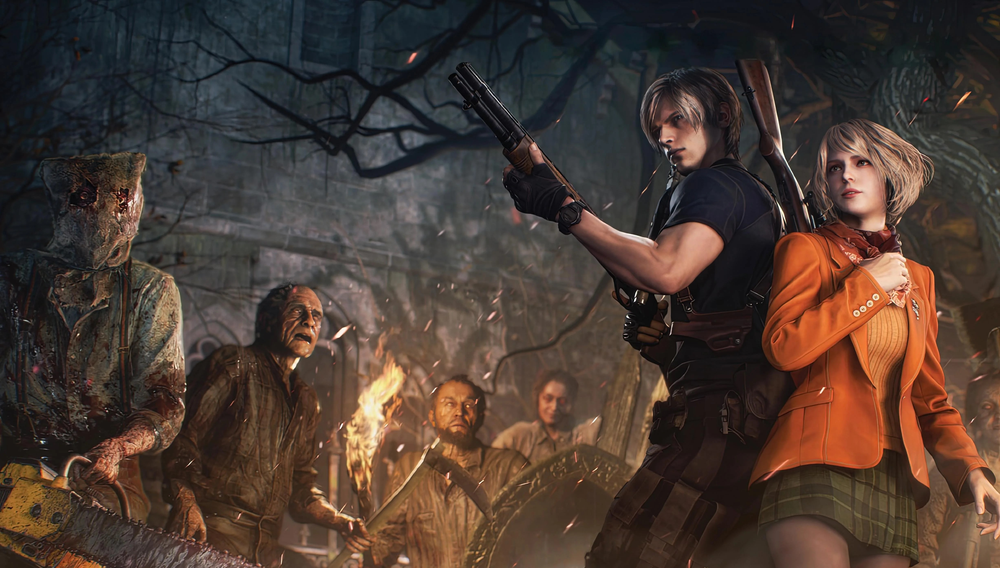
2005
Incidente de Terragrigia
A cidade flutuante de Terragrigia é destruída por um ataque bioterrorista. Este evento leva à criação da BSAA.
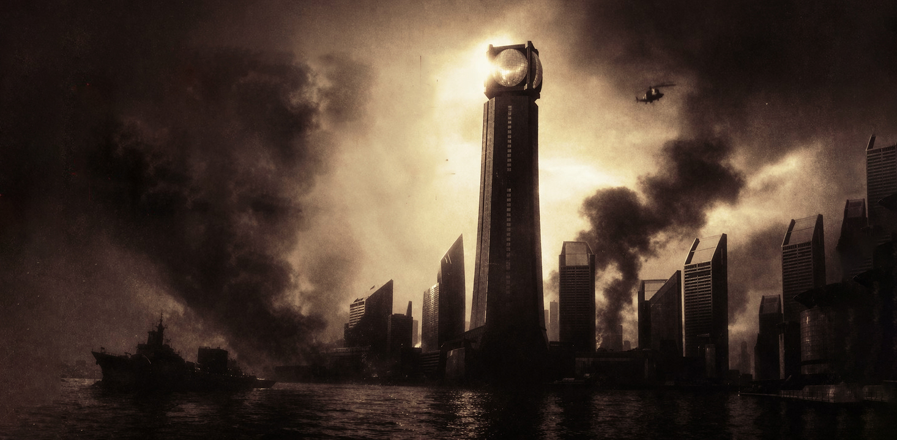
2009
Incidente de Kijuju
Chris Redfield e Sheva Alomar investigam tráfico de bioarmas na África. Confronto final com Albert Wesker.
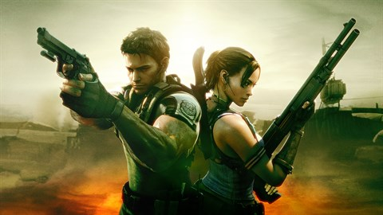
2013
Surtos Globais Simultâneos
Ataques bioterroristas coordenados ocorrem ao redor do mundo. Leon, Chris e Jake Muller trabalham para parar a ameaça da Neo-Umbrella.
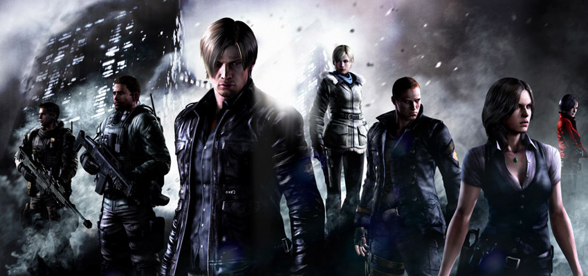
2017
Incidente da Família Baker
Ethan Winters busca sua esposa Mia desaparecida em Louisiana, enfrentando a família Baker infectada pelo parasita Mold.
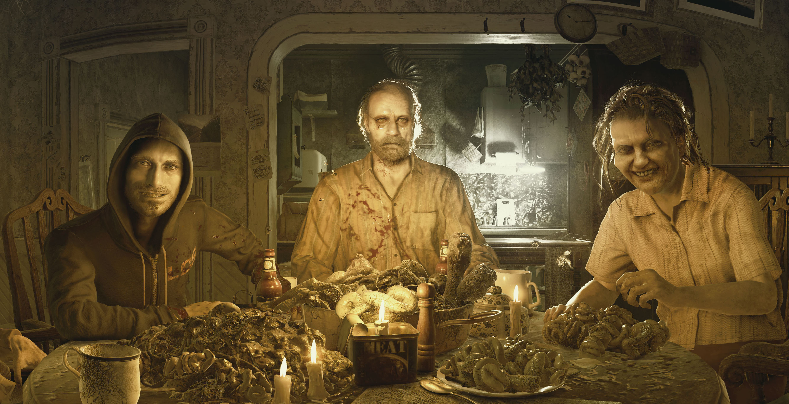
2021
Incidente da Vila Europeia
Ethan Winters procura sua filha sequestrada em uma vila misteriosa governada por Mother Miranda e quatro lordes mutantes.
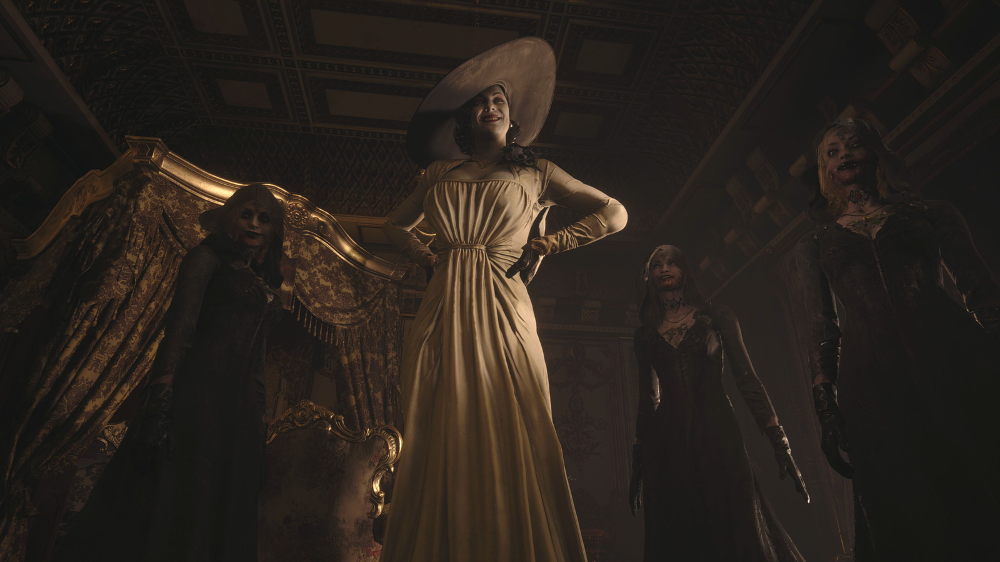